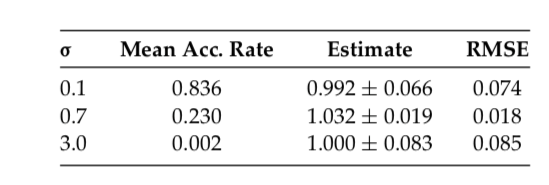

Chapter 9 Optimal Proposal Distributions and Adaptive MCMC
9.1 Intro
MH 算法需要选proposal，很自然，有些proposal比较好用。决定使用哪个proposal非常重要也非常难。这个问题经常使用一个ad hoc 方法试错。但是，这个问题可以尝试从理论角度估计出一个最优的proposal scalings 或者adaptive algorithms去自动的找到一个好的proposal。这章回顾了这几个可能性的方法。
9.1.1 MH algorithm
Accept rate（虽然之前有但是既然写了就再抄一遍） \[ \alpha(\mathbf{x}, \mathbf{y})=\left\{\begin{array}{ll}{\min \left\{\frac{\pi(\mathbf{y})}{\pi(\mathbf{x})} \frac{q(\mathbf{y}, \mathbf{x})}{q(\mathbf{x}, \mathbf{y})}, 1\right\},} & {\pi(\mathbf{x}) q(\mathbf{x}, \mathbf{y})>0} \\ {1,} & {\pi(\mathbf{x}) q(\mathbf{x}, \mathbf{y})=0}\end{array}\right. \]
If the proposal is symmetric, than this becomes a simpler version: \[ \alpha(\mathbf{x}, \mathbf{y})=\left\{\begin{array}{ll}{\min \left\{\frac{\pi(\mathbf{y})}{\pi(\mathbf{x})}, 1\right\},} & {\pi(\mathbf{x}) q(\mathbf{x}, \mathbf{y})>0} \\ {1,} & {\pi(\mathbf{x}) q(\mathbf{x}, \mathbf{y})=0}\end{array}\right. \]
9.1.2 Optimal Scaling
当然最快的收敛方式是\(q(x,y)=\pi(y)\) and in which case \(\alpha(x,y)=1\). Then the convergence is immediate. But ofc in MCMC contex the \(\pi(y)\) cannot be sampled directly. 最常见的是symmetric random-walk Metropolis algoithm(RMW)对称随机游走Metropolis。形式为\(Y_{n+1}=X_n+Z_{n+1}\), 而加的部分\(\{Z_n\}\) 是独立的服从某些对称分布（比如正态\(N(0,\sigma^2)\)）.在这种情况下，核心问题就变成如何选择proposal的scale。（选\(\sigma\)）。过小的话会让chain移动的过于缓慢。过大的话proposal就会经常被拒绝。必须要排除这些及短期看。(Goldilocks principle.) Metropolis在1953的文章就认识到了这一点，并且考虑\(Z_{n} \sim U[-\alpha, \alpha]\). 最近，在选取最优proposal的scaling上有了显著的进步，可以得到渐进接受率。在某些情况下，可以精确的得到最优的scaling。 具体在4.2讨论。
9.1.3 Adaptive MCMC
一般来讲手动选取proposal，试错法。但是这很难，特别是在高维的情况。一个替代方法是adaptive MCMC。思想是asks the computer to automatically “learn” better parameter values “on the fly”.也就是说，在算法运行的时候。 假设\(\left\{P_{\gamma}\right\}_{\gamma \in \mathcal{Y}}\) 是一族Markov Chain，with stationary distribution \(\pi\)。 比方说一个RWM, with increment distribution \(N\left(0, \gamma^{2} I_{d}\right)\).Adaptive MCMC讲随机的更新\(\gamma\)在每个迭代过程中，以便于去寻找最合适的值。 反直觉的是，adaptive MCMC并不总是保证stationarity of \(\pi\) 。但是，如果adaptation设计的满足一定条件，stationarity是可以保证的。同时速度上的优势能保持。在4.3会讲。
9.1.4 Comparing Markov Chains
以上方法都是为了去找“better”或者“best” MCMC samplers, 但是在我们深入这些问题之前，我们必须先考虑一个问题，对于一个MCMC sampler，什么叫“好”？
假设\(P_1\)和\(P_2\)是两个Markov chain，并且都有stationary distribution \(\pi\). 那么我们称“\(P_1\)收敛比\(P_2\)快”，如果\(\sup _{A}\left|P_{1}^{n}(x, A)-\pi(A)\right| \leq \sup _{A}\left|P_{2}^{n}(x, A)-\pi(A)\right|\)" for all \(n\) and \(x\).
也可以说\(P_1\)比\(P_2\)方差小如果\(\mathbf{\operatorname { V a r }}\left(\frac{1}{n} \sum_{i=1}^{n} g\left(X_{i}\right)\right)\) 对\(P_1\)来说更小。这个方法关注于g以后的方差，并可能依赖于\(g\)的选取。也可能依赖于迭代次数n或者起始点。
一般我们假设Markov chain已经stationary了，那么对于足够大的n，有\(\mathbf{\operatorname { Var }}\left(\frac{1}{n} \sum_{i=1}^{n} g\left(X_{i}\right)\right) \approx \frac{1}{n} \mathbf{V} \mathbf{a} \mathbf{r}_{\pi}(g) \tau_{g}\),where \(\tau_{g}=\sum_{k=-\infty}^{\infty} \operatorname{corr}\left(g\left(X_{0}\right), g\left(X_{k}\right)\right)=1+2 \sum_{i=1}^{\infty} \operatorname{corr}\left(g\left(X_{0}\right), g\left(X_{i}\right)\right)\) is the integrated autocorrelation time. 所以可以从\(\tau_g\)的角度来判断。哪个链比较好。
另外一个角度是Markov chain是否能更快的探索整个状态空间。称为“\(P_1\) mixed faster than \(P_2\)”, if \(\mathrm{E}\left[\left(X_{n}-X_{n-1}\right)^{2}\right]\) is larger under \(P_1\) than under \(P_2\). \(\mathrm{E}\left[\left(X_{n}-X_{n-1}\right)^{2}\right]\) 经常用\(\frac{1}{n} \sum_{i=1}^{n}\left(X_{i}-X_{i-1}\right)^{2}\)或者\(\frac{1}{n-B} \sum_{i=B}^{n}\left(X_{i}-X_{i-1}\right)^{2}\)进行估计。 但是要注意的是，在这个估计下，拒绝的移动会导致\(\left(X_{n}-X_{n-1}\right)^{2}=0\),也就是说，拒绝减缓了chain，但是小步的移动也不会有很大的帮助。最好能找到有理由的，大步的移动。
由于以上几个角度，如果定义“更好”的Markov chain取决于具体要研究的问题。但是，在某些条件下，这几个准则可以等价，所以可以得到一致最优的proposal scaling选取。
9.2 Optimal Scaling of Random-Walk Metropolis
Method: RWM with \(Y_{n+1}=X_n+Z_{n+1}\), where \(\{Z_i\}\) are i.i.d. with fixed symmetric density with some scaling parameter \(\sigma>0\).
9.2.1 Basic principle
A first observation is that if \(\sigma\) is very samll, then virtually all proposed moves will be accepted, but the movement is very small, so overall the chain will not mix well. Similarly, if \(\sigma\) is too large, then most moves will be rejected, the main will usually not move at all. What we need is reasonable-sized proposal moves together with a reasonably high acceptance probability.
9.2.2 Optimal Acceptance Rate as \(d\rightarrow \infty\)
Major progress about optimal scalings was made by Roberts et al.(1997). (做MCMC中心极限定理那帮人) They considered RWM on \(\mathbf R^d\) for very special target densities, of the form \[ \pi\left(x_{1}, x_{2}, \ldots, x_{d}\right)=f\left(x_{1}\right) f\left(x_{2}\right) \ldots f\left(x_{d}\right) \] for some one-dimensional smooth density \(f\).
That is, the target density is assumed to consist of i.i.d. components. Of course, this assumption is entirely unrealistic for MCMC, since it means that to sample from \(\pi\) it suffices to sample each component separately from the one-dimensional density f(which is generally easy to do numerically).
Under this assumption, and assuming proposal increment distribution of the form \(N(0,\sigma^2I_d)\), Roberts proved the remarkable result that as \(d\rightarrow \infty\), the optimal acceptance rate is precisely 0.234. This is clearly a major refinement of the general principle that the acceptance rate should be far from 0 and far from 1.
More precisely, their result is the following.
Suppose that \(\sigma=\ell/\sqrt d\) from some \(\ell>0\). Then as \(d\rightarrow \infty\), if time is sppeded up by a factor of \(d\),and space is shrunk by a factor of \(\sqrt d\), then each component of the Markov chain converges to a diffusion having stationary distribution f, and speed function given by \(h(\ell)=2\ell^2\Phi(-\sqrt I \ell)\), where \(\Phi\) is the cumulative distribution function of a standard normal, and \(I\) is a constant depending on \(f\), given in fact by \(I=\int_{-\infty}^{\infty}\left[\left(\frac{f^{\prime}(X)}{f(X)}\right)^{2}\right] f(x) d x\).
It follows that this diffusion is optimized (in terms of any of the criteria in previous section) when \(\ell\) is chosen to maximize \(h(\ell)\). It is computed numerically that this optimal value of \(\ell\) is given by \(\ell_{\mathrm{opt}} \doteq 2.38 / \sqrt{I}\).
Furthermore, the asymptotic (stationary) acceptance rate is given by \(A(\ell)=2 \Phi(-\sqrt{I} \ell / 2)\). Hence, the optimal acceptance rate is equal to \(A\left(\ell_{\mathrm{opt}}\right) \doteq 2 \Phi(-2.38 / 2) \doteq=0.234\), which is where the figure 0.234 comes from.
这点没看懂，不过好像作者也没好好写，两个问题，第一个，因为有\(\sigma=\ell/\sqrt d\) 当\(d\rightarrow \infty\) 时\(\sigma\rightarrow 0\). 这个收敛性就很奇怪？是什么东西呢 第二个问题Markov chain converges to a diffusion，这个diffusion是什么意思，然后这个speed function 又是什么呢，而diffusion is optimized,所以极大化这个speed function又是什么？h function versus A function又有啥意义，感觉从最后这个图来看更像是某种criteria或者mixing的速度的感觉。
9.2.3 Inhomogeneous Target Distributions
Above result requires the strong assumption that \(\pi(x)=\prod ^d_{i=1}f(x_i)\),Roberts and Rosenthal considered inhomogeneous target densities of the form \[ \pi(\mathbf{x})=\prod_{i=1}^{d} C_{i} f\left(C_{i} x_{i}\right) \] \(\{C_i\}\) are i.i.d. from some fixed distribution. They proved that in this case, the result previous still holds, except that the limiting diffusion speed is divided by an “inhomogeneity factor” of \(b \equiv \mathrm{E}\left(C_{i}^{2}\right) /\left(\mathrm{E}\left(C_{i}\right)\right)^{2} \geq 1\). In particular, the more inhomogeneous the target distibution, (the greater the variability of the \(C_i\)), the slower the resulting algorithm.
As a special case, if the target distribution is \(N(0,\Sigma)\) , by change of basis this is equivalent to the case of proposal increment \(N(0,I_d)\) and target distribution \(N(0,\Sigma\Sigma_p^{-1})\).
In the corresponding eigenbasis, this target distribution is of the form, where now \(C_i=\sqrt\lambda_i\) with \(\{\lambda_i\}^d_{i=1}\) the eigenvalues of the matrix \(\Sigma\Sigma_p^{-1}\). For large d, this approximately corresponds to the case where the \(\{C_i\}\) are random with \(\mathrm{E}\left(C_{i}\right)=\frac{1}{d} \sum_{j=1}^{d} \sqrt{\lambda_{j}}\) and \(\mathrm{E}\left(C_{i}^{2}\right)=\frac{1}{d} \sum_{j=1}^{d} \lambda_{j}\). The inhomogeneity factor \(b\) then becomes \[ b \equiv \frac{\mathrm{E}\left(C_{i}^{2}\right)}{\left(\mathrm{E}\left(C_{i}\right)^{2}\right.} \approx \frac{\frac{1}{d} \sum_{j=1}^{d} \lambda_{j}}{\left(\frac{1}{d} \sum_{j=1}^{d} \sqrt{\lambda_{j}}\right)^{2}}=d \frac{\sum_{i=1}^{d} \lambda_{j}}{\left(\sum_{j=1}^{d} \sqrt{\lambda_{j}}\right)^{2}} \]
Sherlock(2006) did explicit finite-dimensional computations for the case of normal target distributions, and came to similar conclusions.
9.2.4 Metropolis-Adjusted Langevin Algorithm.
Roberts and Tweedie(1996) and Roberts and Rosenthal(1998) considered the more sophisticated Metropolis-Adjusted Langevin algorithm (MALA). This algorithm is similar to RWM, except that the proposal increment distribution \(Z_i\sim N(0,\sigma^2I)\) is replaced by \[ Z_{i} \sim N\left(\frac{\sigma^{2}}{2} \nabla \log \pi\left(X_{n}\right), \sigma^{2} I_{d}\right). \] Here the extra term \(\frac{\sigma^2}{2}\nabla \log \pi (X_n)\), corresponding to the discrete-time approximation to the continuous-time Langevin diffusion for \(\pi\), is an attempt to move in the direction in which the (smooth) target density \(\pi\) is increasing.
In this case, under some speed and scale, \(A\left(\ell_{\mathrm{opt}}\right)=0.574\) (as opposed to 0.234).
This proves that the optimal proposal scaling \(\sigma\) and the acceptance rate are both significantly larger for MALA than for RWM, indicating that MALA an improved algorithm with faster convergence. The catch, of course, is that the gradient of \(\pi\) must be computed at each new state reached, which could be difficult and/or time-consuming. Thus, TWM is much more popular than MALA in practice.
这个Langevin diffusion有点意思，感觉很奇怪。 \(X_t\)是一个随机过程，因为是一个Markov chain,作为，所以\(\dot{X}=\nabla \log \pi(X)+\sqrt{2} \dot{W}\),而 也就是用\(\dot{X}=\nabla \log \pi(X)+\sqrt{2} \dot{W}\) 进行考虑。 从随机微分方程角度，因为这个东西确实是一个随机过程，所以可以用那套定义来做。其中有个langevin equation就是这个，所以大概可能也许描述如下：
如果我们有一个随机过程\(X(t)\)，其平稳分布是\(\pi(\cdot)\),那这个平稳分布的langevin diffusion就应该是 \(\dot{X}=\nabla \log \pi(X)+\sqrt{2} \dot{W}\),而我们用MH算法构造的Markov Chain应该和这个随机过程\(X(t)\)尽量靠近，那么在\(X_t\)往其梯度方向移动就很靠近。
9.2.5 Numerical Examples
Consider the case as \(d=10\). Target density \(\pi\) is ten-dimensional normal with some covariance matrix \(\Sigma\).
Let M be the \(d\times d\) matrix having diagonal elements 1, and off-diagonal elements given by the product of the row and column number divided by \(d^2\), that is, \(m_{ii}=1\), and \(m_{ij}=ij/d^2\) for \(j\neq i\). Then let \(\Sigma^{-1}=M^2\). Then let \(\Sigma^{-1}=M^{2}\) (since M is symmetrix, \(\Sigma\) is positive-definite), and let the target density \(\pi\) be that of \(N(0,\Sigma)\).
The result of arthor is

This result showed that if the sigma is too small (0.1), or too large(3.0), the result will be poor. The best medium select is with accept rate around 0.234.
Then this confirms that, when scaling the increment covariance as \(\sigma I_d\), it is optimal to find \(\sigma\) to make the acceptance rate close to 0.234.
9.2.6 Inhomogeneous Covariance
Consider a case for non-diagonal proposal increment, the same target density \(N(0,\Sigma)\) but with \(\Sigma=diag(1^2,2^2,...,10^2)\).
This is interesting because the last coordinate now has the highest variance. Start the algorithms with the initial value \(X_0=(1,0,0,...,0)\).
Usual RWM algorithm \[ \begin{array}{cccc}{\sigma} & {\text { Mean Acc. Rate }} & {\text { Estimate }} & {\text { RMSE }} \\ \hline 0.7 & {0.230} & {114.8 \pm 28.2} & {30.5} \\ \hline\end{array} \]
Even though \(\sigma\) was well chosen, the resulting algorithm still converges poorly, leading to a poor estimate with large standard error and large RMSE.
Next consider the modified algorithm with increment proposal equal to \(N(0,\sigma^2\Sigma)\), with result
\[ \begin{array}{cccc}{\sigma} & {\text { Mean Acc. Rate }} & {\text { Estimate }} & {\text { RMSE }} \\ \hline 0.7 & {0.294} & {100.25 \pm 1.91} & {1.83} \\ \hline\end{array} \]
The increment proposal covariance proportional to the target covariance is very dramatic. Estimate is much better and very close to true value. That indicate that use increment proposals which mimic the covariance of the target distribution if at all possible.
FAQ:
- Larger acceptance preferable?
- No. Showed above.
- Essential for acceptance rate be exactly 0.234?
- No. As the example shows, efficiency remains high when AR between 0.1 and 0.6.
- Are there asymptotic results relevant to finite-dimensional problems?
- Yes. Infinete dimensional results are good approximations to finite-dimensional situations
没看懂上面这个
- Do these result hold for all taget distributions?
- No. They are only proved for very special cases. Simulation seem to suggest that they approximately hold in other cases too.
- Do these results hold for multimodal distributions?
- Yes, but only in principle. At least for distributions with independent (while perhaps multimodal). But the asymptotic acceptance rate is only respect to the entire target distribution. That is, if the sampler stuck in one mode, it may misrepresent the asymptotic acceptance rate.
- Do these results hold for,say, Metropolis-within-Gibbs algorithms?
- No, since they are proved for full-dimensional Metropolis updates only. Indeed, the Metropolis-within-Gibbs algorithm involves updating just one coordinate at a time, and thus essentially corresponds to the case \(d=1\). In that case, it appears that the optimal acceptance rate is usually closer to 0.44 than 0.234.
9.3 Adaptive MCMC
之前的章节讲了在某些criteria一个MCMC算法的proposal能有最优。但是问题的关键还没解决，如何找到这些最优解。就比如说如果我们确信接受率为0.234的时候最优，如何找到一个合适的proposal scaling从而得到这个接受率。
一个最常见的方法，就是试错法，如果AR太高，则降低\(\sigma\),然后再来，如果太低就加高..这个方法一般来说都很有用，但是问题是比较耗时间，需要搜东调整。而且这个方法不能处理更复杂的进步，比如说让proposal的covariance matrix渐进的服从未知分布的真实covariance matrix\(\Sigma\)。
As an alternative, 考虑一个算法能自己提升Markov chain.特别的，让\(\left\{P_{\gamma}\right\}_{y \in \mathcal{Y}}\) 为一族Markov chain的转移核，都有一样的平稳分布\(\pi\).让\(\Gamma_n\) 是选取的kernel在第n次迭代，所以有： \[ \operatorname{Pr}\left(X_{n+1} \in A | X_{n}=x, \Gamma_{n}=\gamma, X_{n-1}, \ldots, X_{0}, \Gamma_{n-1}, \ldots, \Gamma_{0}\right)=P_{\gamma}(x, A) \] for \(n=0,1,2,...\), \(\{\Gamma_n\}\)是通过某种自适应的更新算法。理论上来说\(\Gamma_n\) 可以依赖于整个Markov chain的历史\(X_{n-1}, \ldots, X_{0}, \Gamma_{n-1}, \ldots, \Gamma_{0}\), 虽然在实践中这一堆元素\(\left\{\left(X_{n}, \Gamma_{n}\right)\right\}_{n=0}^{\infty}\)是Markovian的。一般来讲这个算法非常容易实现，只需要一些额外的修改。 是否这些adaptive的方法会提高收敛依赖，显然依赖于选取的adaptive algorithm。更基础的问题，我们现在考虑的，是是否adaptation会破坏 收敛性。
9.4 Ergodicity of Adaptive MCMC
Adaptive MCMC方法的遍历性。
一般来讲，既然每个Markov chain的\(P_{\gamma}\)都收敛到了\(\pi\),那么所有的自适应混合应该也收敛到\(\pi\)才对。但是，不是这个情况。一个很简单的反例如下：（这里有三篇文献） let \(\mathcal{Y}=\{1,2\}\), let \(\mathcal{X}=\{1,2,3,4\}\), with \(\pi(1)=\pi(3)=\pi(4)=0.333\) and \(\pi(2)=0.001\). 设\(P_\gamma\)是一个RWM algorithm，with proposal \(Y_{n+1} \sim U\left\{X_{n}-1, X_{n}+1\right\}\) for \(P_1\), or \(Y_{n+1} \sim U\left\{X_{n}-2, X_{n}-1, X_{n}+1, X_{n}+2\right\}\) for \(P_2\).(当然，任意跑出了\(\mathcal X\)).定义一个adaptive策略如下 \(\Gamma_{n+1}=2\) 如果nth proposal被接受了，否则\(\Gamma_{n+1}=1\) .
这时候因为proposal是uniform，但是因为\(\pi(2)=0.001\)，所以MH 的accept ratio肯定不会高，所以会失败.
1-> 如果从\(\Gamma_2\)开始，那么可能-2，-1，+1，+2，那50%的概率直接越界拒绝，切到1，+1的话到2但是MH ratio很低也容易被拒绝，只有+2才不会被stuck， 如果第一次失败了，留在1，但是就切到\(\Gamma_1\)，那只能跳到2，或者-1直接拒绝，但是2的概率也小，所以也会拒绝，所以就stuck在1上了。
根据反例，很重要有足够的条件保证\(\{X_n\}\)能收敛到\(\pi\). 近些年有很多文献证明了adaptive MCMC在不同情况下的遍历性（各态历经性？）。 特别，Roberts and Rosenthal (2007) 证明了\(\lim _{n \rightarrow \infty} \sup _{A \subseteq \mathcal{X}} \| \operatorname{Pr}\left(X_{n} \in A\right)-\pi(A) \|=0\),渐进收敛，并且有\(\lim _{n \rightarrow \infty} \frac{1}{n} \sum_{i=1}^{n} g\left(X_{i}\right)=\pi(g)\),对于所有有界的映射\(g : \mathcal{X} \rightarrow \mathbf{R}(\mathrm{WLLN})\),假设只有diminishing (a.k.a. vanishing) adaption condition \[ \lim _{n \rightarrow \infty} \sup _{x \in \mathcal{X}}\left\|P_{\Gamma_{n+1}}(x, \cdot)-P_{\Gamma_{n}}(x, \cdot)\right\|=0 \quad \text { in probability } \] 并且有containment(a.k.a. bounded convergence) condition \[ \left\{M_{\epsilon}\left(X_{n}, \Gamma_{n}\right)\right\}_{n=0}^{\infty} \text { is bounded in probability, } \epsilon>0 \] where \(M_{\epsilon}(x, \gamma)=\inf \left\{n \geq 1 :\left\|P_{\gamma}^{n}(x, \cdot)-\pi(\cdot)\right\| \leq \epsilon\right\}\) is the convergence time of the kernel \(P_\gamma\) when beginning in state \(x\in \mathcal X\).
The previous equation is a technical condition which is satisfied for virtually all reasonable adaptive schemes.
It holds whenever \(\mathcal X \times \mathcal Y\) is finite, or is compact in some topology in which either the transition kernels \(P_\gamma\), or the Metropolis-Hastings proposal kernels \(Q_\gamma\),have jointly continuous densities. It also holds for adaptive RWM and Metropolis-within-Gibbs algorithms under very general conditions(Bai et al.,2008)
So, in practice, the requirement , the previous equation can be largely ignored.
By contrast, condition diminishing adaption condition is much more fundmental. It requires that the amount of adapting at the nth iteration goes to 0 as \(n\rightarrow \infty\).也就是说adapting过程中，当\(n\rightarrow \infty\) 时adapting的量到0，也就是不adapting了？原文的英文没太懂，啥叫amount of adapting，但是应该是这个理解。（Note that the sum of the adaptations can still be infinite,i.e. an infinite total amount of adaptation is still permissible, and it is not neccessarily required that the adaptive parameter \(\{\Gamma_n\}\) converge to some fixed value.） 所以还是能有无限个proposal，proposal的scaling也不用收敛到一个常数。 比如说，如果算法adapts 在n次迭代有概率\(p(n)\) ，则这个条件自动满足如果\(p(n)\rightarrow 0.\) 换种方式，如果\(\gamma\)的选取基于一个empirical averageover iterations 1，通过n，那么这n次迭代是\(O(1/n)\) ，则goes to 0.
这段还是没懂，特别是最后这句话，\(O(1/n)\)这块是什么意思？还有nth iteration only with probability \(p(n)\)这个也没懂。
这些结论能让我们更新我们的参数\(\{\Gamma_n\}\) 实际上任何方法我们希望，只要vanishing condition holds。那么这样，哪个adaption的方法最好？
9.4.1 Adaptive Metropolis
第一个重要的adaptive MCMC是adaptive Metropolis (AM) algorithm. (Haario et al.(2001))。这个算法是启发于观察diminishing adaption condition,对于Random Walk Metropolis (RWM) in \(\mathbf R^d\) ,至少对于正态的目标分布，最优的是一个proposal covariance matrix of the form \((2.38)^2/d\) 乘以目标协方差矩阵\(\Sigma\). 因为\(\Sigma\) 不知道，所以用\(\Sigma_n\) 进行估计，经验协方差矩阵\(X_0,...,X_n\).
则AM算法最后在第n次迭代使用的proposal分布如下： \[ Y_{n+1} \sim N\left(X_{n},\left[\frac{(2.38)^{2}}{d}\right] \Sigma_{n}\right) \] 为了保证这个proposal covariances不会落到0（会违反vanishing/diminishing 条件）。有几种方法，比如在每次iteration对\(\Sigma_n\)上加一个\(\epsilon I_d\) \(\epsilon>0\). 另外一个可能性是替代性的使用一个混合分布有如下形式： \[ (1-\beta) N\left(X_{n},\left[\frac{(2.38)^{2}}{d}\right] \Sigma_{n}\right)+\beta N\left(X_{n}, \Sigma_{0}\right) \] 对于某些\(0<\beta<1\) 和某些固定的非退化矩阵\(\Sigma_0\).(比如说\(\Sigma_{0}=\left[(0.1)^{2} / d\right] I_{d}\)). （其他版本，用某些固定的proposal distribution对一开始几次迭代，当经验协方差矩阵不是良定的，比如说一开始几次迭代，求不了经验分布函数(n<p)）。
Since empirical estimates change at the nth iteration by only \(O(1/n)\), it follows that the diminishing adaption condition will be satisfied. Furthermore, the containment condition will certainly be satisfied if one restricts to compact regions, and in fact containment still holds provided the target density \(\pi\) decays at least polynomially in each coordinate, a very mild assumption. So, AM is indeed a valid sampling algorithm.
Computer simulation demonstrate AM algorithm will indeed “learn” the target covariance matrix, and approach an optimal algorithm, even in very high dimensions. This will converge considerably faster than a nonadapted RWM algorithm.
9.4.2 Adaptive Metropolis-within-Gibbs
A standard alternative to the usual full-dimensional Metropolis algorithm is the “Metropolis-within_Gibbs” algorithm.
To be specific, suppose that the ith coordinate is updated using a proposal increment distribution \(N(0,e^{2 ls_i})\), so \(ls_i\) is the log of the standard deviation of the increment. We would like to find optimal values of the \(ls_i\), whcih may of course be different for the different variables.由之前的章节可知，一个经验法则是选取accept rate approximately 0.44. 但是就算用这些方法，在高维条件下手动调整\(ls_i\)也非常困难。
一个方法（Roberts and Rosenthal,2009）去adapt \(ls_i\) 是拆分run into “batches”，比如说50个迭代。在第n个batch，更新\(ls_i\) by 加或者减一个adaptation amount \(\delta(n)\). 这个adapting努力使得接受率十分靠近0.44.特别的，我们增加\(ls_i\) 用\(\delta(n)\) 如果对分布variable i 的接受率高于0.44在第n个batch，或者降低\(ls_i\)如果比0.44低.
为了满足diminishing condition，我们需要\(\delta\rightarrow 0\);比如取\(\delta(n)=\min \left(0.01, n^{-1 / 2}\right)\). 而第二个条件很容易满足，只需要限制\(ls_i\) 在一个有限的区域\([-M,M]\). 但是，这还不够。由Bai et.al.2008, 这个条件几乎都能满足，如果target density \(\pi\) decreases at least polynomially in each direction (a very mild condition). Hence, the restriction is once again not of practical concern.
Simulations (Roberts and Rosenthal,2009) 表示adaptive Metropolis-within-Gibbs algorithm does a good job of correctly scaling the \(ls_i\) values. 即是维度高达500，leading to chains which mix much faster than those with pre-chosen proposal scalings.
Preliminary general-purpose software to implement this algorithm is now available (Rosenthal,2007).
9.4.3 State-Dependent Proposal Scalings
另外一个方法让proposal scaling,也就是proposal的方差 基于目前的状态\(X_n\),使得，比如说，给定\(X_n=x\),我们可能提议\(\mathcal Y_{n+1}\sim N(x,\sigma^2_x)\). 在这种情况，接受概率变为 \[ \alpha(x, y)=\min \left[1, \frac{\pi(y)}{\pi(x)}\left(\frac{\sigma_{x}}{\sigma_{y}}\right)^{d} \exp \left(-\frac{1}{2}(x-y)^{2}\left(\sigma_{y}^{-2}-\sigma_{x}^{-2}\right)\right)\right] \] \(\sigma_x\)的函数形式可以有多种方法进行选择，去得到更快的收敛性。
比如说，在很多问题中，目标分布将会更分散当我们离初始点很远的时候。这种情况，可能更适合，让\(\sigma_x=e^{a}(1+|x|)^{b}\),\(a\)和\(b\)adaptively的选取。比如说，我们能在此把链分为batches，每个batches包含50次迭代。每次迭代之后，算法会更新\(a\)通过加或者减\(\delta(n)\) 使得接受率尽可能的接近0.234或者0.44. 这个算法同时也加或者减\(\delta(n)\) 给 \(b\) 使得接受概率在这两个区间之内：\(\{x \in \mathcal{X} :|x|>C\}\),\(\{x \in \mathcal{X} :|x| \leq C\}\)C是取定的常数。
再一次的，要满足diminishing adaptive condition得有\(\delta(n)\rightarrow 0\),并且有界性条件则非常容易满足。所以，者提供了一个方便的方法去给出一个useful functional form to \(\sigma_x\)，就算不知道a和b的值也不要紧。 (Roberts and Rosenthal 2009) 表示算法工作的很好，至少在简单的时候如此。
另外一个方法，有些时候被称为regional adaptive Metropolis algorithm(RAMA).使用有限次分割状态空间：\(\mathcal{X}=\mathcal{X}_{1} \dot{\cup} \ldots \dot{\cup} \mathcal{X}_{m}\). The proposal scaling is then giving by \(\sigma_x=e^{a_i}\) whenever \(x\in \mathcal X_i\) with the acceptance probability in previous equation. 每个\(a_i\)的值is again adapted after each batch of iterations, by adding or subtracting \(\delta(n)\) in an attempt to make the acceptance fraction of \(\mathcal X_i\) close to 0.234.(作为一个特殊的情况，如果在一个batch里面没有访问到\(\mathcal X_i\))，那么我们总是加一块\(\delta(n)\)到\(a_i\)上，去避免\(a_i\)过小然后使得proposed move永远不move到\(\mathcal X_i\)。 再一次的，这个算法在非常宽泛的条件下能够使得\(\delta(n)\rightarrow 0\). 最近(Craiu et al.(2009))的工作考虑特殊的改造RAMA，多个算法的拷贝同时运行去找到所有最大值点而不是困在一个极值点。他们的工作同时也允许proposal distribution是一个加权混合不同的\(N\left(x, e^{2 a_{i}}\right)\).，使得不同分割\(\{\mathcal X_i\}\) 不完美的选取，使得有更复杂的RAMA-type算法得到更广泛的应用。
当然，Langevin（MALA）算法可能也被归类于一类状态依赖 scaling,当然也可能有adaptive的版本的MALA（Atchade,2006）.
9.4.4 Limit Theorem
很多MCMC的一款能够用中可以使用如下Markov chain limit theorem，比如weak law of large numbers(WLLN), strong law of large numbers (SSLN), and central lmit theorem (CLT), in order to guarantee good asymptotic estimates and estimate stnadard errors. 所以一个很自然的问题就是adaptive MCMC这些极限定理还是否成立。 基于diminishing adaptation and containment 的假设，WLLN对于所有的 bounded functional都成立。 (Roberts and Rosenthal,2007,Thm3).所以至少意味着使用adaptive MCMC用于估计有界泛函的均值，将会以很高的概率得到一个准确的答案，如果运行足够长的链。 对于无界泛函，WLLN一般来说也成立，但是不总是成立。甚至对有界泛函，SLLN不一定能成立，同样的例子证明CLT可能也不成立。所以建议是估计MCMC的标准差对于adaptive MCMC来说就很challenging如果我们只假设diminishing adaptation and containment.
基于更强的假设，将会有更多的结论。比如说（文献），证明了对于adaptive MCMC算法各种情况下的极限定理，假设假设adaptive parameters converge to fixed values sufficiently quickly.他们也证明了这些adaptive algorithms将会继承很多渐进最优性质对于对应的固定参数方法、这些结论促进了adaptive MCMC的更多的应用。然而，浙西需要不同的technical条件，实践中会更难以验证。
9.5 FAQ
- 需要满足diminishing adaptation condition才能保证converge
- 不需要搞定所有technical condition才能用adaptive MCMC，只要满足diminishing adaptation，基本上就能渐进可用。
- adaptive MCMC经常用于加速高维收敛。比如几百维的基因问题
- 需要adaptation过程设计的能特别的达到最优的parameter值吗，不需要，各态历经性在这方面完全不需要\(\{\Gamma_n\}\) 收敛，只需要满足diminishing adaptation condition，只需要满足the possibility of infinite total adaptation. 但是，很多特定的adaptive MCMC algorithms proposed are indeed designed to attempt to converge to specific values. (比如说proposal scaling能使得渐进接受率是0.234)
- 可以adapt一定时间，然后就不adapt了，用最后adapt的参数抽？可以，因为每个kernel都是ergodic的，但是要adapt多久没有理论支持，比如说对于200维的数据，将会需要上百万的迭代adapt之后才会得到一个比较好的proposal covariance matrix。
- 只能用特定的几种adaptive MCMC吗？（adaptive Metropolis，adaptive Metropolis-within-Gibbs,RAMA,…）不是，什么情况都行，可以使用任意规则对\(\{\Gamma_n\}\)进行adapt。只要满足adaptation diminishes，那么算法就有很大的可能性可行。最优挑战的部分就是找到sensible/clever adaptation rules.
- 有其他方法，不仅仅是adaptive MCMC,可以帮助算法“学习”如何去converge well？ 当然有，比如说particle filters, population Monte Carlo, sequential Monte Carlo,可以都帮忙考虑作为尝试“学习”快速收敛的方法。但是这些算法的细节和这里提出的adaptive MCMC不一样。
9.6 Conclusion
9.7 A tutorial on adaptive MCMC
(Andrieu and Thoms 2008)
ergodic: It is guaranteed to eventually produce samples \(\{X_i\}\) distributed according to \(\pi\)
The aim of this paper is to review the theoretical underpinnings and recent methodological advances in the area of computer algorithms that aim to “optimise” such parameterised MCMC transition probabilities in order to lead to computationally efficient and reliable procedures.
Such as tempering type algorithms.
Discuss the choice of a criterion to optimise.
Class of process called Controlled Markov chains
Controlled Markov chain Monte Carlo
Sample initial values \(\theta_0,X_0\in \Theta\times X\)
- Iteration \(i+1\) (i0), given \(\theta_i=\theta_i(\theta_0,X_0,...,X_i)\) from iteration i
- Sample \(X_{i+1}|(\theta_0,X_0,...,X_i)\sim P_{\theta_i}(X_i,\cdot)\).
- Compte \(\theta_{i+1}=\theta_{i+1}(\theta_0,X_0,...,X_{i+1})\)
References
Andrieu, Christophe, and Johannes Thoms. 2008. “A tutorial on adaptive MCMC.” Statistics and Computing 18 (4): 343–73.